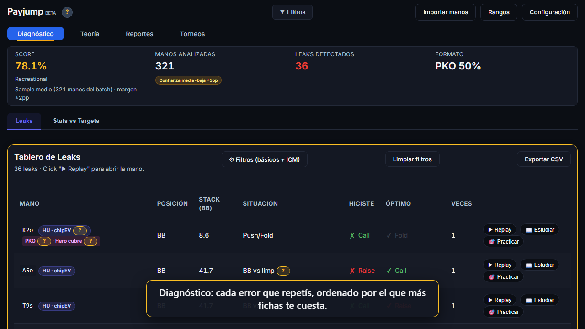
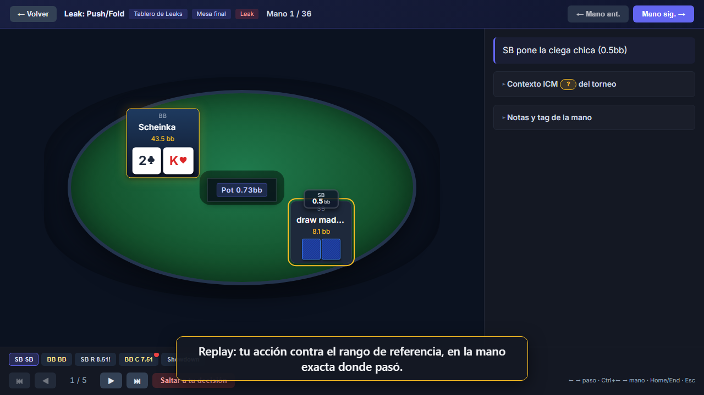
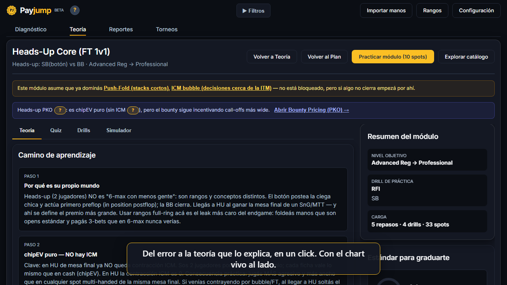
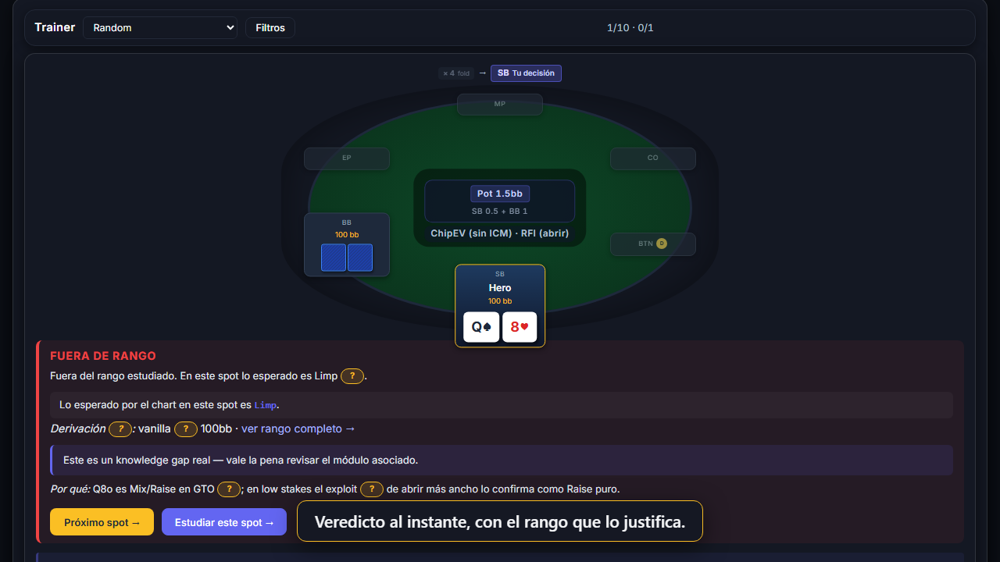

Lee tus manos reales directo de la carpeta de tu sala, te muestra qué error repetís y cuánto te cuesta, y te lleva de esa mano a la teoría y al trainer que lo corrige. Sin PokerTracker, sin cuenta, sin subir nada a internet.
El bucle completo: detectar, entender, estudiar, practicar. Todo sobre tus manos.
Importa tus hand histories de PokerStars, Winamax, 888, GGPoker y más. Compara cada decisión contra rangos de referencia y te lista los errores que repetís, ordenados por lo que te cuestan.

Cada error abre la mano donde pasó: tu acción, lo que decía el rango para ese stack y esa posición, y por qué. Preflop y postflop (c-bet, barriles).

Desde el replay, un click te lleva al módulo que cubre ese spot: push/fold, defensa de ciega, squeeze, ICM en burbuja, bounty cuando cubrís al rival, c-bet por textura.

Practicás los spots que te fallan, no spots al azar. Veredicto inmediato con el rango al lado, repetición espaciada, y un calentamiento de cinco minutos antes de cada sesión.

MTT y SnG, vanilla y bounty/PKO. Stacks reales, no 100bb fijos. No cubre cash.
En burbuja y mesa final los rangos se contraen; con bounty y cubriendo al rival, se expanden. El veredicto lo tiene en cuenta.
Con 12bb o menos, el chart es el equilibrio: ni "abrir chico" ni "esperar una mejor".
C-bet de flop, segundo barril y river, juzgados según el board y quién pagó.
Tus stats comparadas contra cómo juega el campo a tu buy-in, medido sobre 1,6 millones de manos de rivales.
No se conecta a la sala ni a ningún servidor. Tus manos no salen de tu PC. Cerrala antes de sentarte a jugar.
Mac y Linux: versión en ZIP a pedido, escribinos.
Es el precio de lanzamiento: va a subir cuando salga la versión siguiente. Quien compra ahora se queda con este precio y con los 12 meses de actualizaciones.
Pagar con Mercado PagoSiete días de garantía: si no te sirve, te devolvemos el dinero.
La app no se conecta a la sala, no lee la mesa en vivo y no modifica nada: analiza los archivos de manos que la sala ya guarda en tu disco, después de jugar. Igual, varias salas miran qué programas tenés abiertos mientras jugás. Por eso la app corre en una ventana visible: cerrala antes de sentarte a jugar.
No. Lee las manos directo de las carpetas donde tu sala las guarda. Si ya usás PokerTracker 4, podés analizar desde su base en vez de importar; es opcional.
No. Está hecho para torneos: stacks cortos, push/fold, ICM en burbuja y mesa final, bounties. Un rango de cash a 100bb no es lo que vas a jugar en un torneo.
De rangos de referencia por posición y stack (chip-EV, Nash para push/fold), ajustados por ICM y bounty, y contrastados contra cómo juega el campo real. Podés ver el chart que juzgó cada mano, y editarlo si seguís otra escuela.
Es porque el instalador todavía no tiene firma digital, no porque haya algo malo adentro. Click en Más información y después en Ejecutar de todas formas.
Con el link de descarga que te mandamos por mail después del pago. Cada versión nueva te llega al mismo mail.
La versión que tenés instalada sigue funcionando igual, sin vencimiento ni bloqueo. Lo que dejás de recibir son las versiones nuevas; si querés seguir actualizando, se renueva a un precio menor que el de compra.
Se quedan en tu PC, en una base local. No subimos nada a ningún servidor, no hay cuenta ni login.